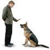

Procedures
A 2-4 month old puppy will spend its time with a puppy walker family to start its socialization until it is one year or one and a half years old. During this period, the puppy walker family gives the dog love, gentle guidance, and consistent care to nurture the puppy to accomplish its special destiny. The puppies have the pleasure of living with their raiser families for 14 to 18 months before returning to our school for formal training to become guides.
A guide dog trainer is in charge of the guiding training. It usually takes 6~10 months for this phase. Once the grown puppies return to the training institute from their puppy raising homes, the dogs are ready to learn the tools of the trade. They discover how to become not just well-behaved, meticulously socialized dogs, but professionals! Now, they are about to embark on the career for which they've been preparing. The dogs are taught by skilled instructors to safely guide someone through the complexities of pedestrian travel. This training takes approximately two to three months.
A guide dog instructor is in charge of the client training. Before starting the client training, an instructor arranges a well-trained guide dog to live with a guide dog applicant for a while to make them get to know each other. At the same time, the applicant knows how to take care of the dog. Then, it will take 2~4 months to train the applicants with their guide dogs. When both the applicants and guide dogs get along well, guide dogs will formally start their service. However, it doesn't mean the end. Aftercare visits will be made regularly by the instructors since then.